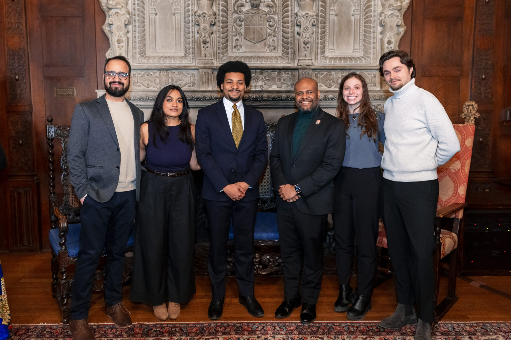
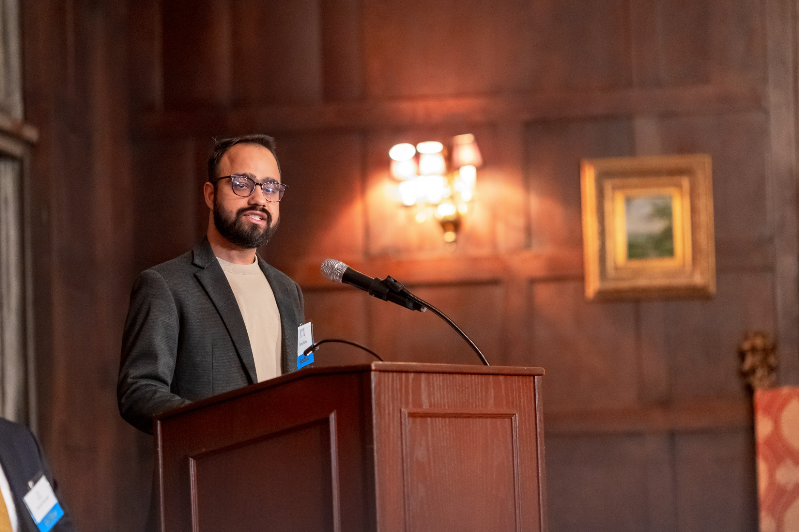
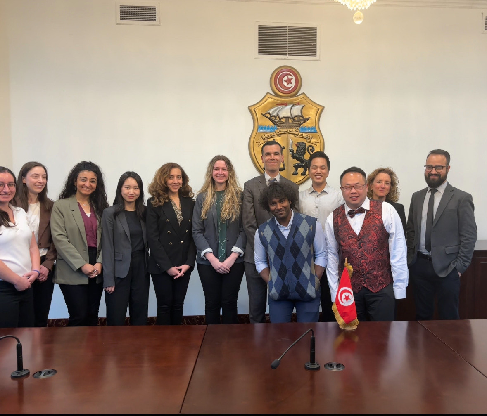
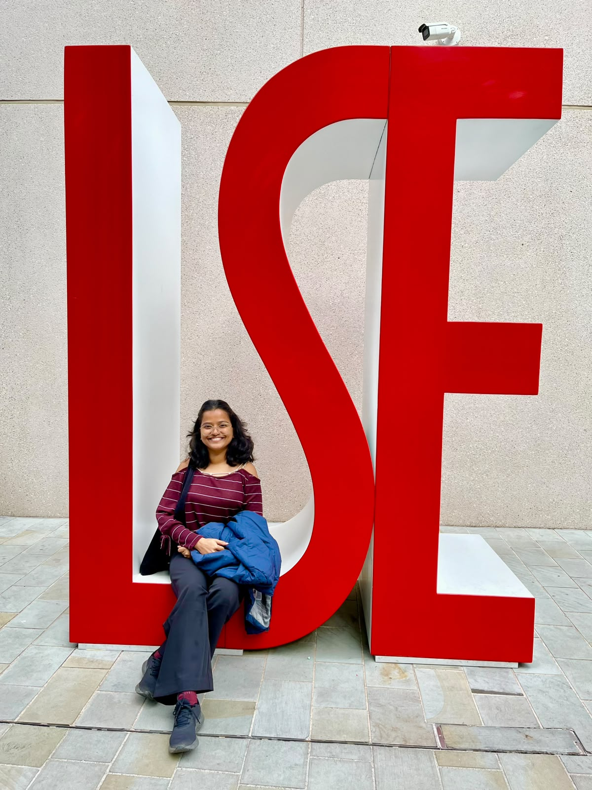

Undergraduate students
Explore universities, countries and academic pathways.
Independent academic & career guidance
Personalised guidance for study abroad, academic growth and career decisions—grounded in your goals, your profile and the realities of each pathway.

About BridgeMinds Lab
We help students and young professionals understand their options, evaluate their profiles and build practical pathways towards academic and professional goals—in India and abroad.

Our point of view
Your next step should reflect who you are, what you want to achieve and the opportunities realistically available to you. We bring research, real-world experience and personal attention to that decision.
Explore our approach ↗Who we help
Whether you are exploring possibilities or preparing an application, we help you make the next step more intentional.
Explore universities, countries and academic pathways.
Choose programmes aligned with academic and career goals.
Develop research positioning and identify suitable opportunities.
Consider further study, international opportunities or career transitions.
Find direction when several academic or professional paths feel possible.
Build a stronger profile well before the application cycle.
Services
Start with a focused conversation, build a strategy, or get structured support through the application process.

Our commitment
“Independent guidance.
Your interests first.”
BridgeMinds Lab does not receive university commissions for student admissions. Our recommendations are based on your profile, goals and fit—not on commission incentives.

A global perspective
We connect individual aspirations with a broader view of education, careers and opportunities across borders.
Tell us what you’re planning ↗Meet the team
We’re pleased to welcome Vaishali Srivastava to the BridgeMinds Lab team, bringing expertise across environmental economics, climate change and sustainable development.

Consultant · Environmental Economics & Sustainability
Vaishali works at the intersection of environmental economics, climate change and sustainable development. She holds an MSc in Environmental Economics and Climate Change from the London School of Economics and Political Science (LSE), alongside undergraduate and postgraduate degrees in Economics from India.
Her experience spans development and policy research at IIM Ahmedabad, quantitative research at LSE, and sustainability project development at CATCH Foundation. She contributes to initiatives in afforestation, urban forestry, biodiversity and water restoration, and agroforestry—across feasibility assessment, proposals, stakeholder engagement and impact monitoring.
Her research interests include the links between public policy, natural resources and development. Her MSc dissertation examined the Jal Jeevan Mission, rural piped-water access and groundwater extraction in India.
Your next step starts here
Tell us about your plans. We’ll help you understand what kind of guidance could be useful.